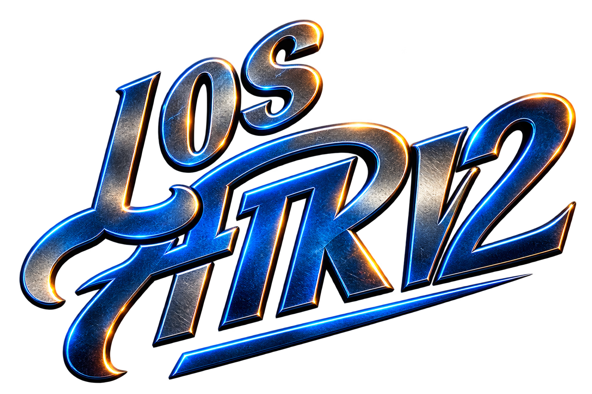

Los Angeles, California

Different generations. Different influences.
One stage.
One stage.
Rock en Español • Norteño • Cumbia • 80s

ATRV2 didn’t begin with a plan to start a band. It began with a father who loved music and three sons he was determined to push toward it.
What started in the late ’90s as family jams eventually became Los Atrevidos, playing quinceañeras, weddings, parties and local events before the members followed different musical paths.
More than two decades later, another family party brought them back together. What was supposed to be one night of music turned into a band again—this time carrying years of rock en español, alternative, norteño, cumbia, salsa, ’80s music and heavier influences with them.
Los Atrevidos became ATRV2: Atrevidos, version 2.0.
ATRV2 isn’t an attempt to recreate the old band. It’s what happened when people who started playing together as kids came back decades later with completely different musical lives behind them—and decided to see what all of it sounded like on the same stage.
Their father had played in a band when he was younger, and by the late ’90s he was finding ways to pass that love of music down. Hugo, still young and learning accordion and keyboards, regularly found himself recruited to perform in front of family and friends. Raúl was eventually gifted a bass. César already had years of music around him as a sonidero and was beginning to play instruments himself.
Then came one Christmas gathering.
Lalo, a close family friend already known for singing pretty much everywhere he went, showed up with his acoustic guitar. Hugo was on accordion and keyboards, César on drums, Raúl on bass, and Lalo did what Lalo always did—he sang.
Somewhere in the middle of a long night surrounded by family and friends, the adults decided these kids were apparently a band.
Los Atrevidos was born.
There wasn’t much equipment. Recycled speakers from the brothers’ old DJ setup became the first PA. Lalo bought an electric guitar, an amp and a microphone. César upgraded a few cymbals. Their dad picked up a set of congas within the next few weeks.
Piece by piece, what had started as a family jam began looking like an actual band.
For their father, it was a dream becoming real.
For Hugo and Raúl... maybe not immediately.
Neither was completely sold on the idea at first, but it didn’t take long before they were in. Los Atrevidos began playing quinceañeras, weddings, parties and local events, building its identity the same way it had built its first PA: one piece at a time.
Eventually, the brothers’ musical interests began pulling in different directions. Raúl, increasingly drawn toward alternative rock and rock en español, left to pursue a different sound and brought Hugo with him into what would become Alebrije.
And just like that, the first era of Los Atrevidos came to an end.
But the musicians didn’t.
Over the years they followed different paths through music and life. Some played in other bands, some toured, some stepped away, and some simply kept playing whenever the opportunity came. The name Los Atrevidos disappeared, but the connection that created it never completely did.
More than two decades later, another family party brought everyone back together.
While planning a surprise birthday party for their mom, the brothers began recruiting old friends to play. Lalo returned on vocals, longtime friend Juanito joined on bass, Raúl moved from his original role on bass to guitar, and the group started rehearsing a set built largely around the ’50s and ’60s rock & roll they loved.
It was supposed to be a party.
Instead, they accidentally started a band again.
Juanito eventually stepped away for personal reasons, but by then something had already clicked. This wasn’t simply a reunion of the old Los Atrevidos. Everyone had accumulated another twenty-plus years of influences and experience.
So the old name stayed—but with a twist.
Los Atrevidos became ATRV2: Atrevidos, version 2.0.
And the family began growing again.
Hugo’s friend Steve originally came around simply wanting to jam. He picked up the accordion and has been learning ever since, bringing with him a genuine love for old-school norteño that added another character to the band’s sound.
Ramiro later came aboard on bass, bringing deep musical knowledge, strong technique and an unmistakable ’80s influence. Through Ramiro came his friend Rena, whose roots are in metal—think Iron Maiden—but whose versatility lets him jump from a heavy guitar part to norteño or cumbia without blinking.
That mix is ultimately what ATRV2 became.
The band was never built around a single genre. César brought the cumbias, salsa and romantic ballads. Raúl brought ’90s alternative and rock en español along with a love for early rock & roll. Hugo became the musical chameleon connecting seemingly unrelated styles. Steve brought old-school norteño, Ramiro brought the ’80s, and Rena brought the heavier edge.
And Lalo—the friend with the acoustic guitar who was singing at that Christmas party all those years ago—remains part of the story that started it all.
ATRV2 isn’t an attempt to recreate Los Atrevidos exactly as it was.
It’s what happened when the people who started playing together as kids came back decades later with completely different musical lives behind them—and decided to see what all of it sounded like in the same band.